總務操作手冊
總務負責接單、處理、填維修紀錄，需要請廠商或要報廢時送主任核示，修好後送主任結案簽核。不會另外發通知，有空就打開系統看「待接單」。
一、快速指引
每個功能的步驟，熟悉後看這裡就夠了。點功能名稱可跳到完整說明。
| 1. 第一次使用：確認身分 | 掃報修 QR Code → 輸入姓名、手機 → 按 確認 |
| 2. 認識畫面 | 分頁：待接單、處理中、待簽核、查詢、統計，右上 ＋報修 |
| 3. 接單 | 待接單 → 卡片上按 接單 |
| 4. 退回報修單 | 點開單子 → 退回 → 寫退回原因 → 退回 |
| 5. 參考以前類似的處理 | 接單後看表單上方 以前類似的處理 |
| 6. 填處理內容並儲存 | 填設備品項 → 選處理方式 → 填維修紀錄 → 填材料費、工時 → 儲存 |
| 7. 加處理後照片 | 點開單子 → ＋處理後照片 → 選照片 |
| 8. 改待料、料到了 | 改待料 → 寫等什麼料 → 改待料 → 料到後 料到了，回處理中 |
| 9. 送委外核示 | 選 委外修繕 → 填廠商、電話、估價、評估說明 → 送委外核示 → 送出 |
| 10. 送報廢核示 | 填設備品項、評估說明 → 送報廢核示 → 送出 |
| 11. 送結案簽核 | 確認品項、方式、紀錄、費用、照片 → 送結案簽核 → 看檢查清單 → 送出 |
| 12. 主任退回的單 | 處理中 → 看紅字退回意見 → 補齊後再送 |
| 13. 查詢以前的紀錄 | 查詢 → 輸入關鍵字 → 查詢 |
| 14. 看統計 | 統計 → 選期間 |
| 15. 自己報修 | 右上 ＋報修 → 填單 → 送出報修 |
| 16. 換人使用 | 畫面最下方 換人使用 → 按 確定 |
二、完整說明
圖中橘色框是要按或要填的地方。圖裡的人名和單子都是示範資料。
1第一次使用：確認身分
每支手機或每台電腦，第一次打開系統時要確認一次身分。確認過後這台裝置就會記住你，之後打開直接使用，不用再輸入。
- 用手機掃張貼的報修 QR Code，或在瀏覽器打開 https://chienxinyuannh.github.io/repair/。
- 輸入姓名和手機號碼，按 確認。手機號碼有沒有加「-」都可以。

輸入姓名和手機後按「確認」 - 畫面出現分頁就完成了。
小技巧把網頁加到手機主畫面，下次一點就開。iPhone：Safari 下方「分享」>「加入主畫面」。Android：Chrome 右上「⋮」>「加到主畫面」。
注意輸入正確卻無法通過，通常是名單上沒有你，或登記的手機號碼不同，請找主任確認。
回快速指引2認識畫面
- 上方五個分頁，數字是件數，「待接單」有新單時數字會變紅色。
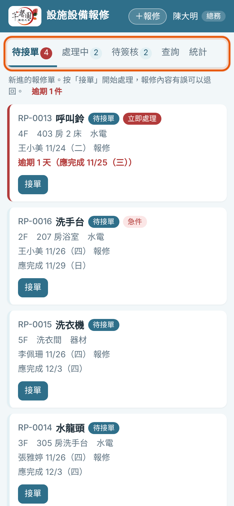
總務的分頁
| 分頁 | 內容 |
|---|---|
| 待接單 | 新進的報修單，等你接 |
| 處理中 | 你接了還沒送簽的單，包括待料、委外處理中 |
| 待簽核 | 送給主任、等主任簽的單，不用處理 |
| 查詢 | 查全部歷史紀錄，看以前怎麼修 |
| 統計 | 件數、逾期、費用、最常壞的東西 |
| ＋報修（右上） | 自己發現損壞時報修 |
3接單
- 在 待接單，逾期和立即處理的排在最前面。直接按卡片上的 接單。
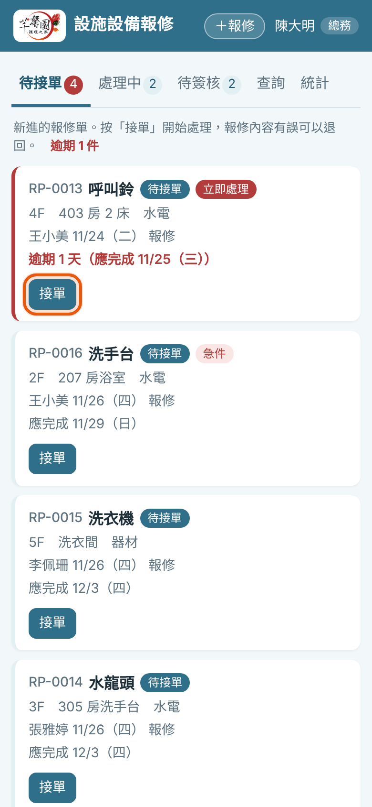
卡片上的「接單」 - 也可以先點開單子看清楚內容和照片，再按下方的 接單。
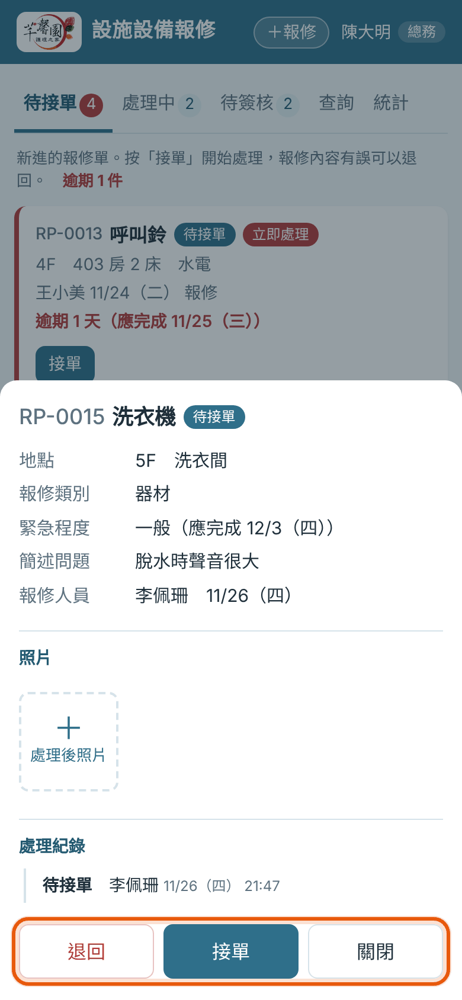
單子下方的「接單」與「退回」 - 接單後會自動打開處理表單，狀態變成「處理中」。
注意「立即處理」的單影響住民安全，請優先處理。
回快速指引4退回報修單
重複報修、不需要處理，或內容有誤時使用。退回後這張單就結束，報修人會看到原因。
- 點開單子按 退回，寫下原因再按 退回。原因一定要寫，例如「重複報修，同 RP-0007」。
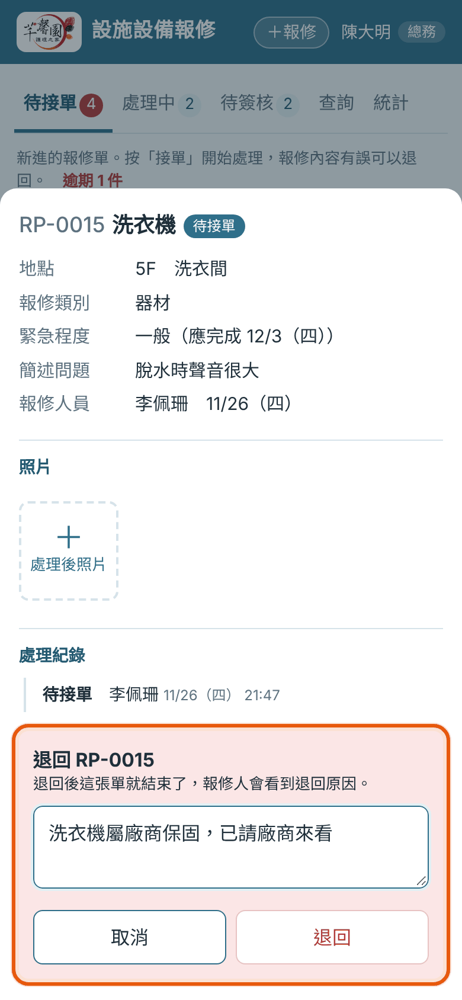
寫退回原因
注意待接單、處理中、待料的單可以退回。已經送主任的單不能退回。
回快速指引5參考以前類似的處理
接單後，處理表單最上面會列出以前同類東西是怎麼修的，包括維修紀錄、廠商電話、費用和處理後照片。
- 先用報修人寫的「報修項目」去找；你填好設備品項後，會再用品項重找一次。點小照片可以放大。
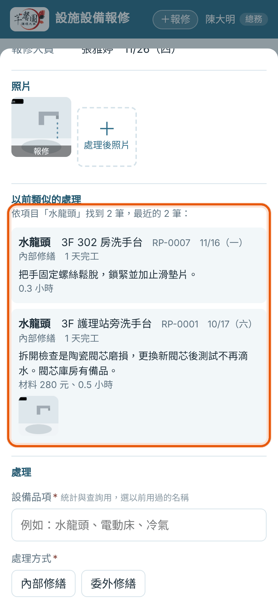
以前類似的處理
為什麼維修紀錄寫得越清楚，以後的人越好參考。例如「更換陶瓷閥芯，庫房有備品」比「已修好」有用得多。
回快速指引6填處理內容並儲存
- 設備品項填東西的通稱，例如「水龍頭」「電動床」「冷氣」。輸入時會提示以前用過的名稱，盡量選一樣的。選處理方式，再寫維修紀錄。
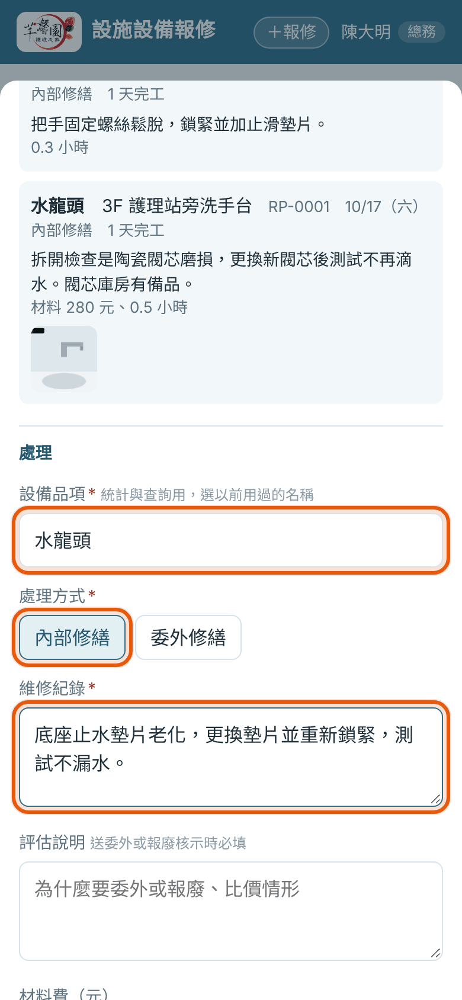
設備品項、處理方式、維修紀錄 - 填材料費（元）和工時（小時），可以寫小數，例如 0.5。
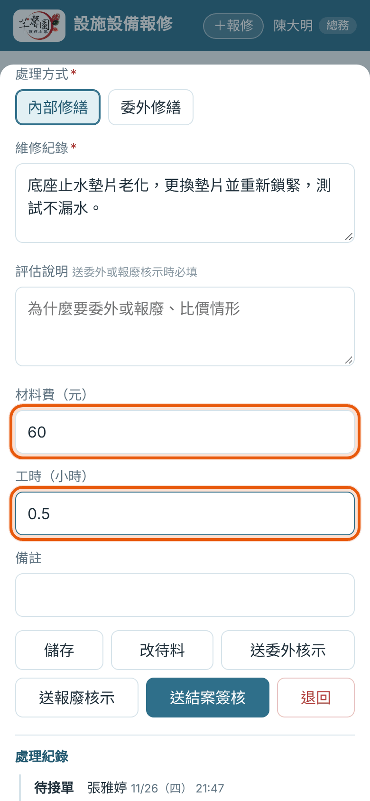
材料費與工時 - 下方的按鈕依情況使用。還沒修完想先存起來，按 儲存。
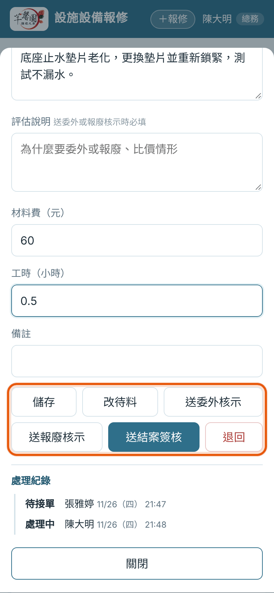
處理表單的按鈕
| 按鈕 | 什麼時候按 |
|---|---|
| 儲存 | 先存起來，之後繼續填 |
| 改待料 | 要等零件或工具 |
| 送委外核示 | 要請廠商修 |
| 送報廢核示 | 不修了，要報廢 |
| 送結案簽核 | 修好了 |
| 退回 | 不需要處理 |
為什麼設備品項是統計「什麼東西最常壞」和查以前紀錄用的。名稱不要加位置或狀況，寫「水龍頭」，不要寫「3F 水龍頭漏水」。
注意送核示、送結案前一定要填設備品項。
回快速指引7加處理後照片
- 在照片區按 ＋處理後照片。上傳前系統會先幫你存好表單，打到一半的內容不會不見。
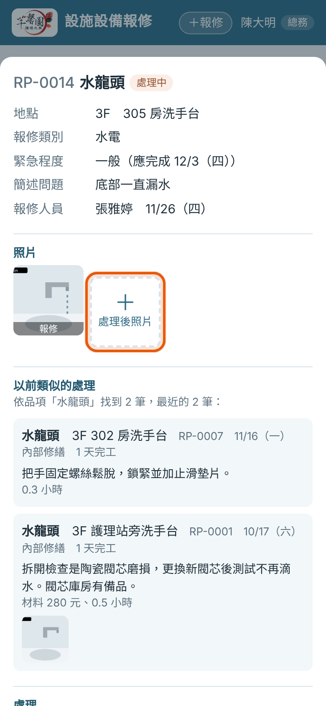
按「＋處理後照片」
小技巧修好後拍一張，主任結案時一看就知道，以後別人查紀錄也看得到修完的樣子。
回快速指引8改待料、料到了
- 要等零件時按 改待料，寫下等什麼、大概何時到，再按 改待料。
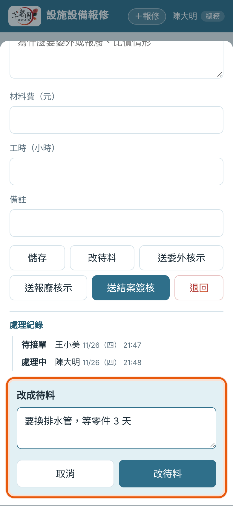
寫等什麼料 - 料到了，打開單子按 料到了，回處理中，繼續處理。
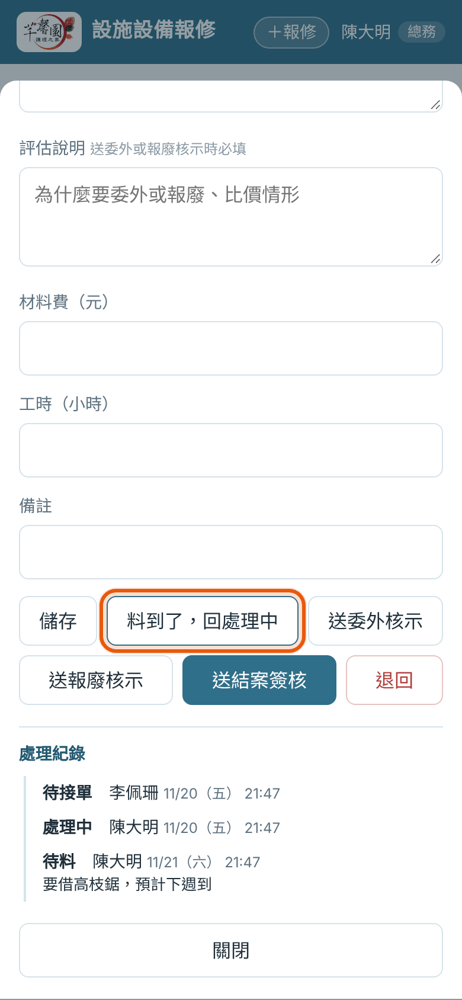
料到了，回處理中
注意待料期間時限照算，逾期一樣會標紅。
回快速指引9送委外核示
自己修不了、要請廠商的，要先送主任同意。
- 處理方式選 委外修繕，會多出廠商欄位。填廠商名稱、電話、估價金額，並在評估說明寫為什麼要委外、有沒有比價。
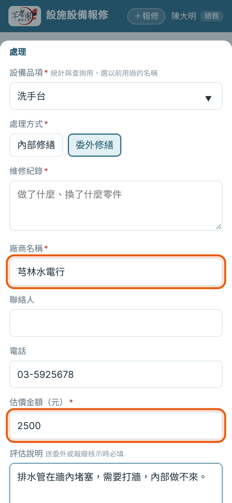
填廠商與估價 - 按 送委外核示，確認內容後按 送出。
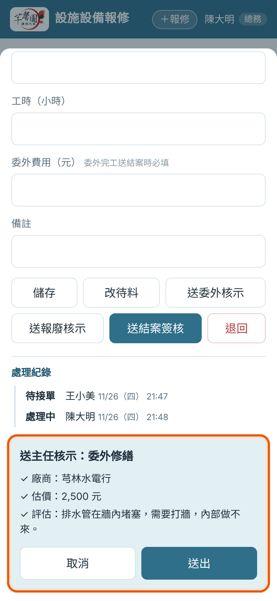
確認後送出 - 主任核准後，狀態變「委外處理中」，就可以聯絡廠商。主任退回的話，單子回到「處理中」，看主任的意見再處理。
- 廠商修好後，打開單子填維修紀錄和委外費用，再送結案簽核。
注意廠商名稱、估價金額、評估說明都要填才能送出，委外完工送結案時一定要填委外費用。
回快速指引10送報廢核示
- 在評估說明寫為什麼要報廢，例如維修費接近新品、已經用很多年。按 送報廢核示 再按 送出。
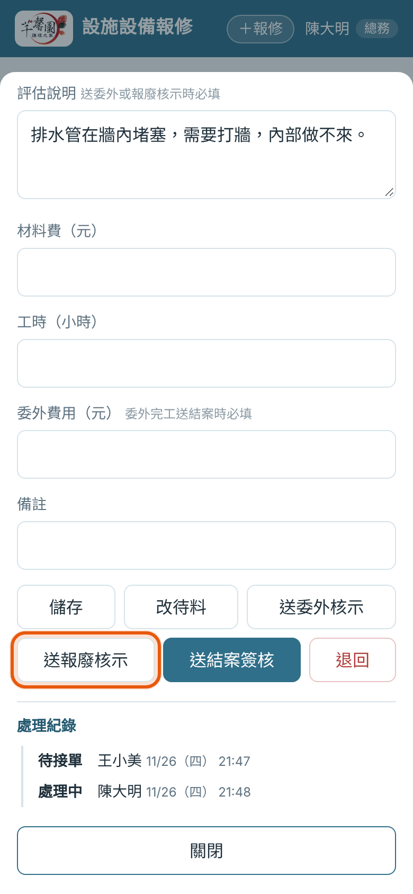
「送報廢核示」按鈕
注意主任核准報廢後，單子直接進「待結案簽核」，主任再簽一次就結案，你不用再送。新品採購另外簽。
回快速指引11送結案簽核
- 修好後按 送結案簽核，系統會列出檢查清單。橘色「！」的項目代表還沒做，例如沒有處理後照片，建議補齊再送。全部確認後按 送出。
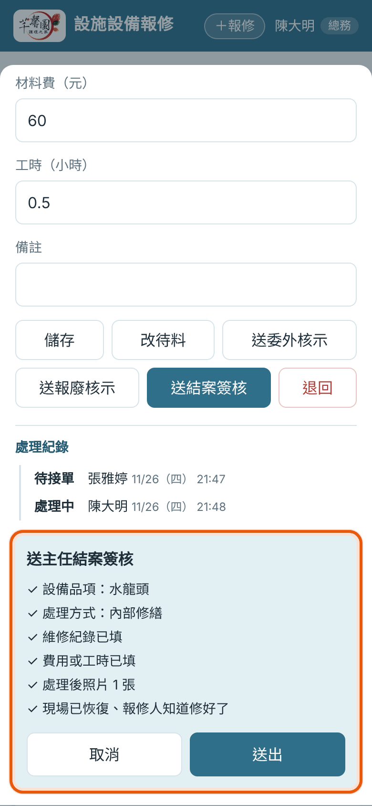
送結案前的檢查清單 - 送出後單子移到 待簽核，等主任簽，你不用再處理。主任核准就結案，退回會回到 處理中。
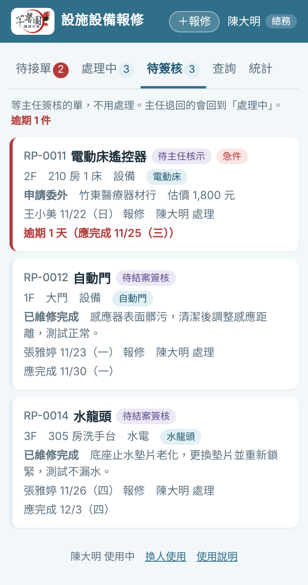
「待簽核」分頁
小技巧送出前先跟報修人說一聲修好了，現場也恢復原狀，這也是清單最後一項。
回快速指引12主任退回的單
- 主任退回的單會回到 處理中，上方會提醒有幾件被退回。
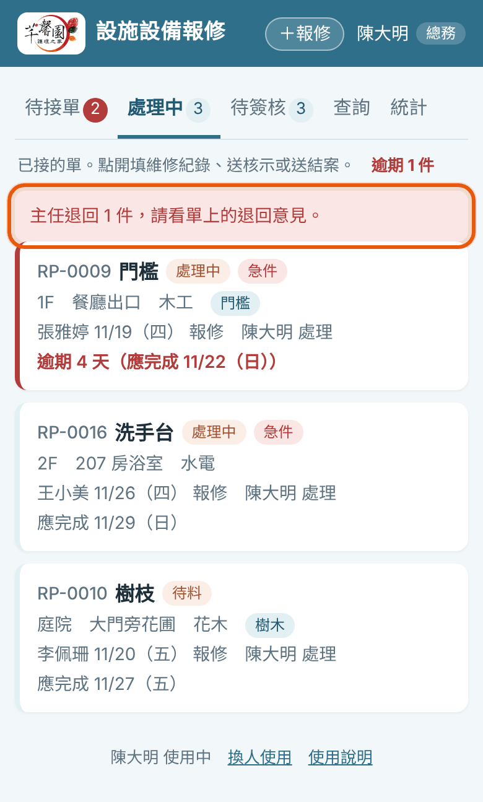
被退回的提醒 - 打開單子，最上面的紅字是主任的意見。照意見補齊後，再送一次。
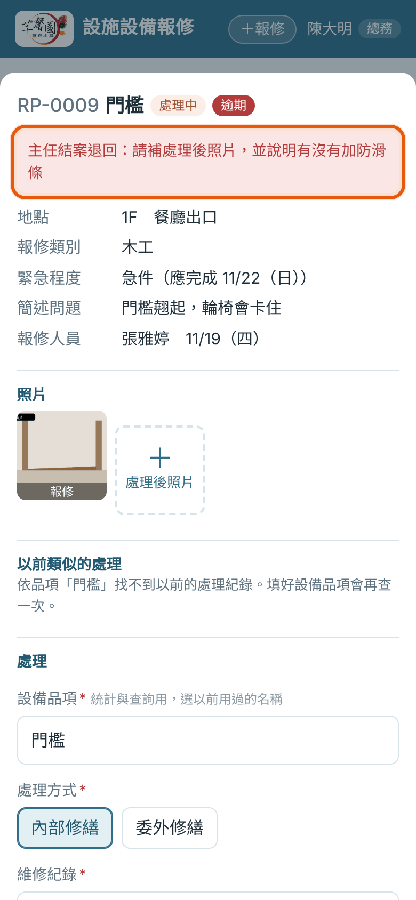
主任的退回意見
13查詢以前的紀錄
- 按 查詢，輸入關鍵字，可以查單號、品項、地點、維修紀錄、廠商、報修人。多個關鍵字用空白隔開，例如「水龍頭 3F」。右邊的選單可以只看某個狀態或逾期的單。
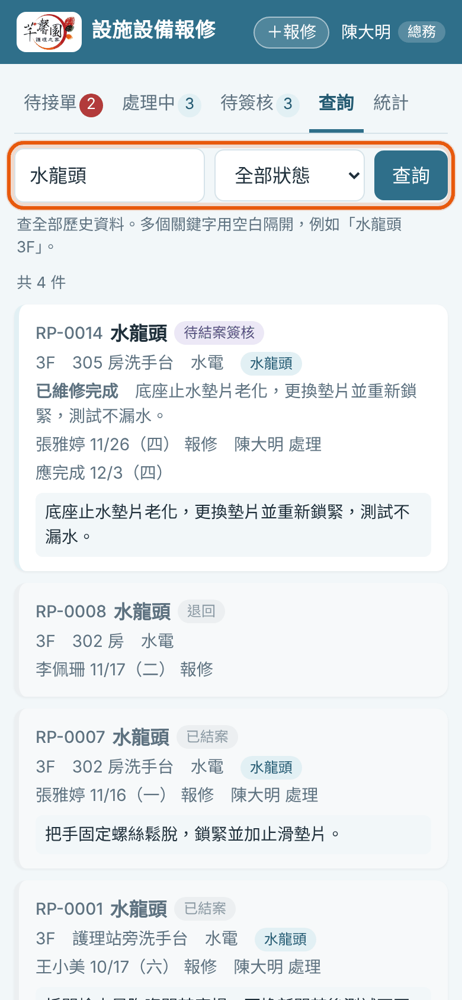
查詢畫面
小技巧查詢會查全部歷史資料，結果直接顯示當時的維修紀錄，不用一張一張點開。
回快速指引14看統計
- 按 統計，選本月、上月、近三個月、今年或自訂期間。點「最常損壞的設備品項」或「樓層區域」裡的一項，會直接跳到查詢，列出相關紀錄。
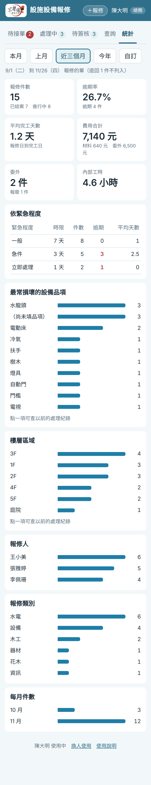
統計畫面（可上下捲動）
注意統計依報修日期計算，退回的單不列入。各數字的算法請看主任手冊的「看統計」。
回快速指引15自己報修
- 巡視時發現損壞，按右上的 ＋報修，填法和一般同仁一樣，請看一般同仁手冊的「報修」。送出後回到 待接單 接單處理。
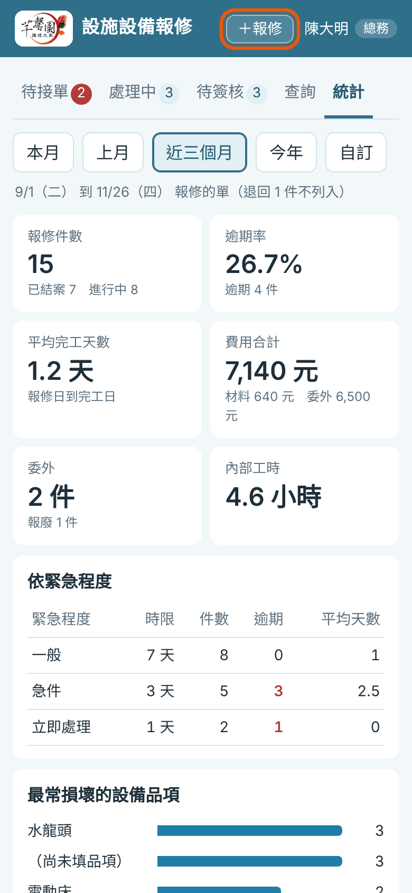
右上的「＋報修」
16換人使用
公用電腦要交給別人用，或借別人的手機報修後要還回去時使用。按了之後這台裝置會忘記你，下次要重新確認身分。
- 捲到畫面最下方，按 換人使用。旁邊的 使用說明 會打開這份手冊。
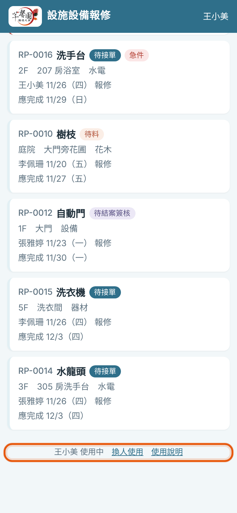
畫面最下方的「換人使用」與「使用說明」 - 看清楚提示後按 確定。
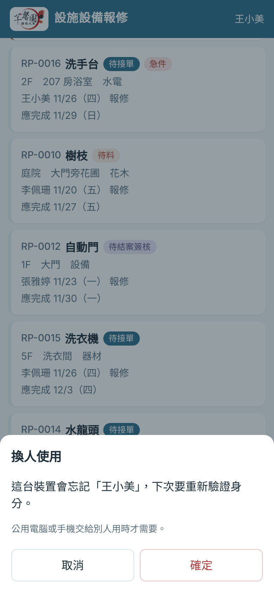
確認要讓這台裝置忘記你
三、附錄
狀態怎麼走
待接單接單處理中送結案待結案簽核主任核准已結案
處理中送委外核示待主任核示核准委外處理中送結案待結案簽核
處理中送報廢核示待主任核示核准待結案簽核主任核准報廢
處理中等零件待料料到了處理中
主任退回（核示或結案）一律回到「處理中」。待接單、處理中、待料的單，總務可以退回。
單子的狀態
| 狀態 | 意思 |
|---|---|
| 待接單 | 剛送出，總務還沒接 |
| 處理中 | 總務已接單，正在處理 |
| 待料 | 等零件或工具 |
| 待主任核示 | 要請廠商修或要報廢，等主任同意 |
| 委外處理中 | 主任已同意，由廠商處理 |
| 待結案簽核 | 已經修好（或確定報廢），等主任最後確認 |
| 已結案 | 全部完成 |
| 報廢 | 東西報廢，不修了 |
| 退回 | 不處理，例如重複報修、報修人撤回，原因會寫在單上 |
超過應完成日還沒修好的單，會標紅色的「逾期」。
處理時限
| 緊急程度 | 時限 | 什麼時候選 | 例子 |
|---|---|---|---|
| 立即處理 | 1 天內 | 影響住民安全 | 呼叫鈴沒反應、扶手鬆動、地面破損會絆倒、插座冒煙或漏電 |
| 急件 | 3 天內 | 影響照顧工作，但暫時有替代辦法 | 一張電動床不能升降、冷氣不冷、某間浴室沒熱水 |
| 一般 | 7 天內 | 不影響安全，也不影響工作 | 燈管閃爍、門把鬆、抽屜卡住、牆面油漆剝落 |
常見問題
- 報修人寫得不清楚怎麼辦？
- 先看照片。還是不清楚就打電話或到現場問，問到的內容可以寫在「備註」。
- 一張單裡有兩樣東西壞了？
- 最好分成兩張單，統計才準。可以自己按「＋報修」補一張。
- 送出後發現填錯了？
- 送主任之後就不能改了，請主任退回，再改好重送。
- 可以一次接很多單嗎？
- 可以，在「待接單」一張一張按「接單」就好，之後到「處理中」慢慢處理。
- 照片拍不清楚可以刪嗎？
- 已經上傳的照片不能刪，再補一張清楚的就好。